Oracle Integration(OIC) のプロセス自動化 (Process Automation) 機能を利用して、簡単なワークフローの作成方法をステップ・バイ・ステップで紹介するチュートリアルです。
ここでは、従業員が休暇取得の申請を提出し、その上司が申請内容を承認 or 却下するシンプルな休暇申請ワークフローを作成します。

前提条件
-
Oracle Integration Cloud インスタンスの作成 が完了していること Oracle Integration(OIC) を使い始めるための準備作業として、OIC インスタンスの作成が必要になります。 この文書は OIC インスタンスの作成方法を ステップ・バイ・ステップで紹介するチュートリアルです。
-
OIC インスタンス作成時のエディションが ENTERPRISE であること
-
OIC インスタンスの ServiceAdministrator ロールが付与されたユーザーが準備されていること
(参考) Oracle Integration Roles and Privileges
https://docs.oracle.com/en/cloud/paas/integration-cloud/integration-cloud-auton/oracle-integration-cloud-roles-and-privileges.html#GUID-44661068-C31A-4AB5-BC24-B4B90F951A34
Process Automation で簡単なワークフローを作成する
OIC インスタンスにアクセスする
Web ブラウザを開き、提供された OIC インスタンスのURLを入力します。もしくはOCIのコンソールから「開発者サービス」－「アプケーション統合」から作成済みのOICインスタンスを選択し、「サービス・コンソール」からOICコンソールを開きます。

TIPS
OCIにログインしていない場合はユーザー名とパスワードを入力し、サイン・インをクリックします。

OIC のホーム画面が開きます。 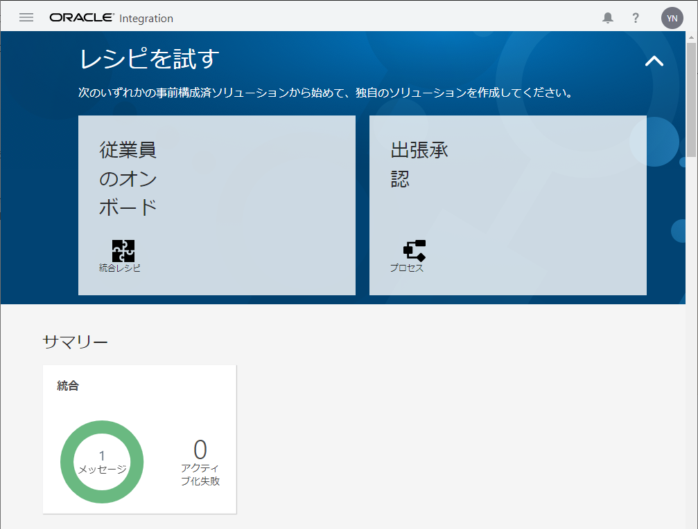
プロセス・アプリケーションを作成する
左ナビゲーションメニューのプロセスをクリックします。

プロセス・アプリケーションをクリックします。

作成をクリックします。

アプリケーションの作成の作成をクリックします。 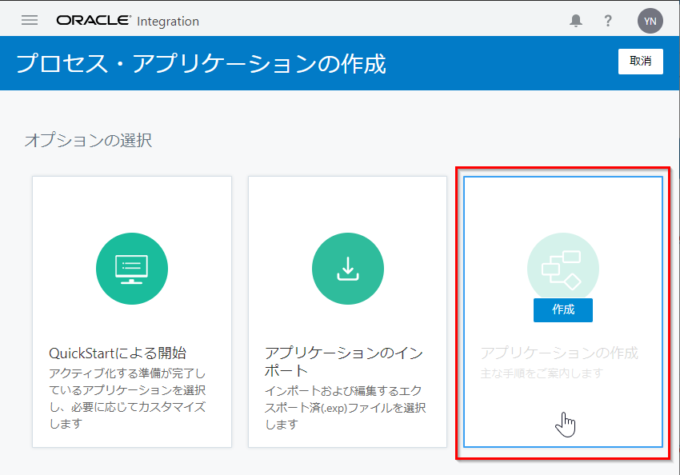
名前、スペース、説明を入力し、すぐに開始をチェックします。ここでは以下を入力します。最後に作成をクリックします。
| 入力項目 | 入力する値 |
|---|---|
| 名前 | LeaveRequestApplication |
| スペース | [新規スペース]を選択 |
| 新規スペース | Tutorial |
| 説明 | 休暇取得申請業務のアプリケーション |

LeaveRequestApplication が作成されます。アプリケーション・ホームタブが表示されます。

アプリケーション・プロパティを編集する
LeaveRequestApplication のアプリケーション・プロパティを設定します。メニューバーの保存ボタンの隣のメニューアイコンをクリックします。

ロケールが英語に設定されている場合は、日本語に変更します。ロケールの追加をクリックします。

画面右の英語を選択し、＜ をクリックします。

画面左より日本語を選択し、＞をクリックします。

OK をクリックします。

ロケールが日本語に変更されたことを確認し、アプリケーション・プロパティを閉じます。

保存をクリックし、プロセス・アプリケーションを保存します。
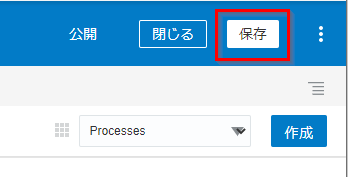
TIPS
プロセス・アプリケーションは、こまめに保存することを推奨します。
ビジネス・プロセスを作成する
休暇取得申請のビジネス・プロセス（フロー）を作成します。ここでは、以下のシンプルな1段階承認のプロセスを作成します。
アプリケーション・ホームタブ内の Processes が選択されていることを確認し、作成→新規プロセスをクリックします。

名前と説明を入力し、すぐに開始を選択します。パターンの選択でフォームを選択し、作成をクリックします。
| 入力項目 | 入力する値 |
|---|---|
| 名前 | 休暇取得申請プロセス |
| 説明 | 休暇取得申請の業務プロセス |
| ドキュメントのみ | 選択しない |
| すぐに開始 | 選択 |
| パターンの選択 | フォームを選択 |

プロセスエディタが開きます。

ビジネス・プロセスを設計する
引き続き、プロセスエディタを利用して、プロセスを設計します。
スイムレーンの作成
プロセスに必要な役割を決定し、そのロールをスイムレーンとして定義します。
TIPS
スイムレーンとは、プロセス・エディタのキャンバス間にある水平のラインです。 すべてのフロー要素はスイムレーン内に配置される必要があります。
休暇取得承認プロセスを開き、プロセスエディタの左端の灰色をダブルクリックし、Employee と入力します。
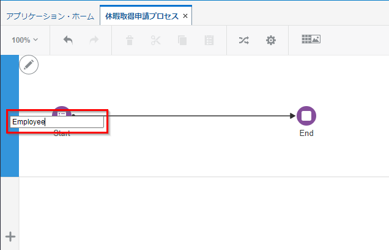
Employee スイムレーンの下の + をクリックし、スイムレーンを追加します。

追加したスイムレーンをダブルクリックし、名前を Manager とします。
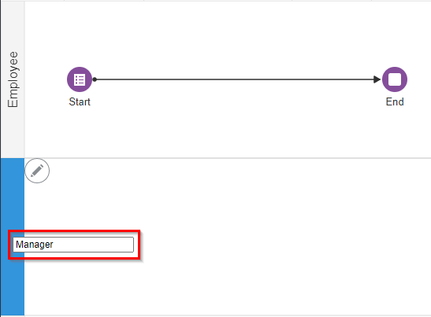
Employee と Manager の2つのスイムレーンが作成されます。

休暇取得申請プロセスの設計
引き続き、プロセス・エディタを利用して、休暇取得申請プロセスを設計します。
Employee スイムレーンの Start イベントのラベルをダブルクリックし、休暇取得申請の新規作成に変更します。

同じ手順で、End イベントのラベルを終了に変更します。

終了イベントを、Employee スイムレーンから Manager スイムレーンにドラッグ&ドロップで移動します。

プロセスエディタの右サイドにあるエレメントパレットのヒューマンを開き、承認タスクを Manager スイムレーンにドラッグ＆ドロップで配置します。

「休暇取得申請の新規作成」イベントと「終了」イベントをつなぐシーケンスをクリックし、削除ボタンをクリックします。

配置した承認タスクのラベル(User task)をダブルクリックし、「休暇取得申請の承認」に変更します。
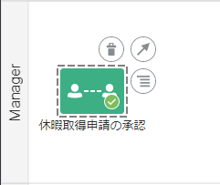
「休暇取得申請の新規作成」イベントを1回クリックし、矢印をドラッグ&ドロップで「休暇取得申請の承認」タスクに接続します。（シーケンス・フローを接続します。）

エレメントパレットのゲートウェイを開き、排他ゲートウェイを Manager スイムレーンの「休暇取得申請の承認」タスクと「終了」イベントの間にドラッグ＆ドロップで配置します。

配置した排他ゲートウェイのラベル(Exclusive gateway)をダブルクリックし、「承認？」に変更します。

「休暇取得申請の承認」タスクと「承認？」ゲートウェイを、シーケンス・フローで接続します。
「承認？」ゲートウェイと「終了」イベントを、シーケンス・フローで接続します。

エレメントパレットのヒューマンを開き、送信タスクを Employee スイムレーンにドラッグ＆ドロップで配置します。

配置した送信タスクのラベル(User task1)をダブルクリックし、休暇取得申請の再提出に変更します。

「承認？」ゲートウェイと「休暇取得申請の再提出」タスクを、シーケンス・フローで接続します。
「休暇取得申請の再提出」タスクと「休暇取得申請の承認」タスクを、シーケンス・フローで接続します。

以下のように、配置したタスクやゲートウェイの位置をドラッグ&ドロップ操作で整えます。

保存をクリックします。

Web フォームを作成する
休暇取得申請プロセスで利用するWebフォームを作成します。
左メニューのフォームをクリックします。

作成→新規Webフォームをクリックします。

名前と説明を入力します。すぐに開始を選択し、作成をクリックします。ここでは以下の通りに入力します。
| 入力項目 | 入力する値 |
|---|---|
| 名前 | 休暇取得申請フォーム |
| 説明 | 休暇取得申請プロセスで利用する共通フォーム |
| 簡易エディタの使用 | 選択しない |
| すぐに開始 | 選択する |
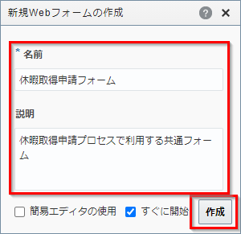
Web フォームエディタが開きます。 基本パレットの入力テキストを、キャンバスにドラッグ&ドロップで配置します。

配置した入力テキストを選択し、プロパティ→一般タブの名前、ラベルを入力します。
| 入力項目 | 入力する値 |
|---|---|
| 名前 | name |
| ラベル | 名前 |

「名前」の右隣に入力テキストを配置します。 配置した入力テキストを選択し、名前とラベルは以下の通りに入力します。
| 入力項目 | 入力する値 |
|---|---|
| 名前 | id |
| ラベル | 社員番号 |

「名前」「社員番号」の下に、基本パレットのラジオ・ボタンを配置します。
配置したラジオ・ボタンを選択し、名前とラベルは以下の通りに入力します。
| 入力項目 | 入力する値 |
|---|---|
| 名前 | leaveType |
| ラベル | 休暇区分 |

休暇区分（ラジオ・ボタン）を選択したまま、プロパティの一般タブを下にスクロールします。
オプション・ソースで静的を選択し、オプション名とオプション値にそれぞれ以下を入力します。
| 入力項目 | 入力する値 |
|---|---|
| オプション名 | 有給休暇 傷病休暇 慶弔休暇 |
| オプション値 | 有給休暇 傷病休暇 慶弔休暇 |

休暇区分（ラジオ・ボタン）の下に、基本パレットの日付を2つ並べて配置します。
1つ目の日付の名前とラベルは以下の通りに入力します。
| 入力項目 | 入力する値 |
|---|---|
| 名前 | leaveStartDate |
| ラベル | 休暇開始日 |

2つ目の日付の名前とラベルは以下の通りに入力します。
| 入力項目 | 入力する値 |
|---|---|
| 名前 | leaveEndDate |
| ラベル | 休暇終了日 |

休暇開始日と休暇終了日の下に、基本パレットのテキスト領域を配置します。
配置したテキスト領域を選択し、名前とラベルを以下の通りに入力します。
| 入力項目 | 入力する値 |
|---|---|
| 名前 | reason |
| ラベル | 理由 |

作成したWebフォームを確認します。プレビューをクリックします。

Webフォームのプレビューが表示されます。フォームに任意の内容を入力し、送信をクリックすると、結果が画面下部に表示されます。
小デバイス、大デバイスなどを選択し、デバイスの大きさにあわせたプレビューができます。
プレビューを終了する場合は、右上の x をクリックします。
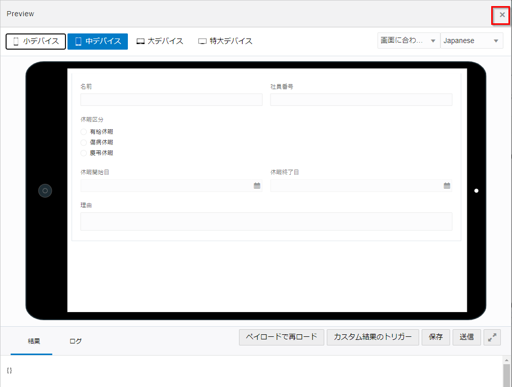
保存をクリックします。

タスク・プロパティを編集する
開始イベントと各種タスクを編集します。
休暇取得申請の新規作成イベントの編集
左メニューのプロセスをクリックし、休暇取得申請プロセスをクリックします。

「休暇取得申請の新規作成」イベントをクリックし、プロパティを開くをクリックします。

画面下部に設定ペインが開きます。タイトルに休暇取得申請の新規作成と入力します。
フォームの虫眼鏡アイコンをクリックします。

前の手順で作成した休暇取得申請フォームを選択し、OKをクリックします。

フォームとプレゼンテーションが設定されることを確認します。
設定ペイン右上の下向き矢印をクリックし、設定ペインを閉じます。

保存をクリックします。

休暇取得申請の承認タスクの編集
「休暇取得申請の承認」タスクをクリックし、プロパティを開くをクリックします。

プロパティの設定が以下の項目になっていることを確認し、フォームの虫眼鏡アイコンをクリックします。
| 項目 | 値 |
|---|---|
| 承認者は誰です。か。 | いずれか1人の割当て先 |
| 割当て先 | 現在のスイムレーン・ロールの任意のメンバー |
| アクション | APPROVE,REJECT |

休暇取得申請フォームを選択し、OKをクリックします。

フォームとプレゼンテーションが設定されることを確認します。
タイトルに休暇取得申請の承認を入力します。
設定ペイン右上の下向き矢印をクリックし、設定ペインを閉じます。

保存をクリックします。

休暇取得申請の再提出タスクの編集
これまでと同じ手順で、タイトルとフォームを設定します。
設定ペイン右上の下向き矢印をクリックし、設定ペインを閉じます。
| 入力項目 | 入力する値 |
|---|---|
| タイトル | 休暇取得申請の再提出を入力 |
| フォーム | 休暇取得申請フォームを選択 |

保存をクリックします。

ゲートウェイを編集する
ゲートウェイを定義することで、フローを分岐・統合させることができます。
この場合、「休暇承認申請の承認」タスクの結果を以下の通りに分岐させます。
- 承認(APPROVE) → 終了イベント
- 却下(REJECT) → 休暇取得申請の再提出タスク
データ・アソシエーションの確認
「休暇承認申請の承認」タスクをクリックし、「データ・アソシエーションを開く」をクリックします。

データの受け渡し設定がタスクへの入力時と出力時のそれぞれで設定されていることを確認し、出力タブをクリックします。

「休暇承認申請の承認」タスクの実行結果が TaskOutcomeDataObject に格納されていることを確認し、 「取消」をクリックします。

「承認？」ゲートウェイの編集
「承認？」ゲートウェイ→「休暇取得申請の再提出」タスクを接続するシーケンス・フローをクリックし、編集アイコンをクリックします。

条件フローが選択されていることを確認し、条件の編集アイコンをクリックします。

式モードに、以下を入力し、検証をクリックします。
「式は有効です。」のメッセージが表示されることを確認し、「OK」をクリックします。
TaskOutcomeDataObject != "APPROVE"

「保存」をクリックします。

プロセス・アプリケーションをテストする
作成したプロセス・アプリケーションをテストします。今回はテスト・モードで動作を確認します。
「テスト」をクリックします。
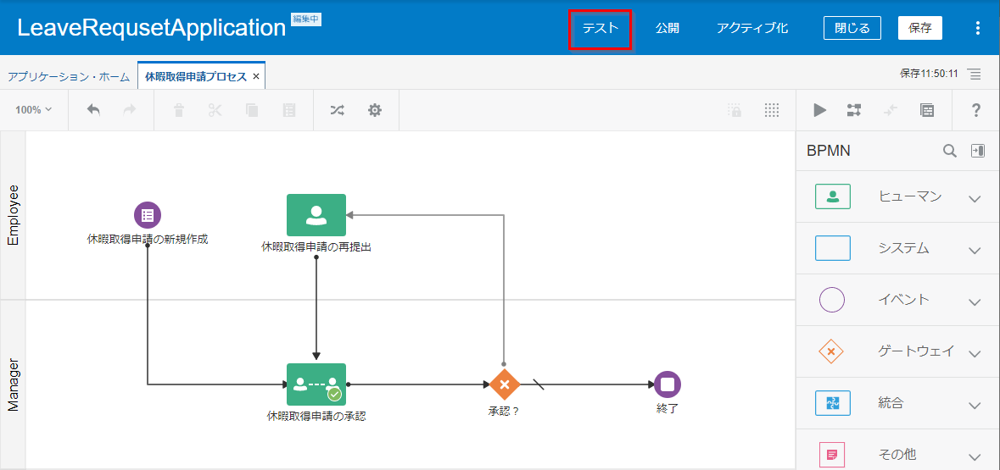
「現在のアプリケーションの検証に成功しました。」のメッセージが表示されます。
アプリケーションのテストタブの「アクティブ化」をクリックします。
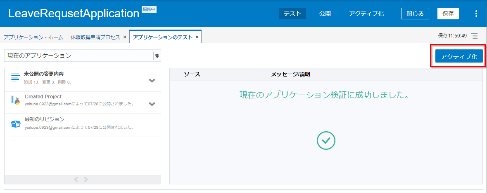
「自分をすべてのロールに追加」が選択されていることを確認し、「アクティブ化」をクリックします。
「OK」をクリックします。


「テスト・モードで試行」をクリックします。
テスト・モードでアプリケーションが起動されます。

休暇取得申請の新規追加の LR アイコンをクリックします。（アイコンの色は、環境により異なります。）

フォームに必要事項を入力し、「送信」をクリックします。
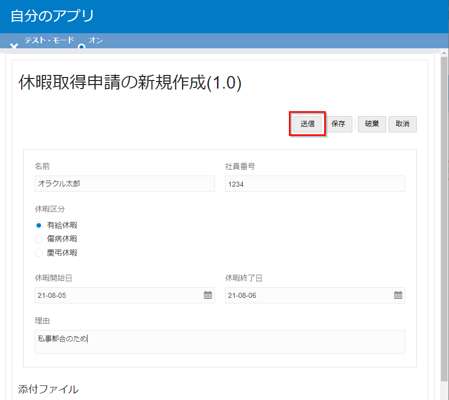
「自分のタスク」をクリックします。

休暇取得申請の承認タスクをクリックします。
申請時の入力内容が正しく表示されることを確認し、「APPROVE(承認)」をクリックします。

必要に応じて、複数回アプリケーションを実行します。
休暇取得申請の承認タスクで「REJECT(却下)」をクリックすると、休暇取得申請の再提出タスクに遷移します。

「SUBMIT(再提出)」をクリックすると、再び休暇取得申請の承認タスクに戻ります。

完了したプロセスを確認する場合は、「プロセス」をクリックします。
その後、フィルタメニューからステータスの完了をチェックします。

テスト・モードのブラウザを閉じます。
「非アクティブ化」をクリックし、テスト環境のアプリケーションを終了します。

タスク・アクションのラベルを変更する
先ほどテスト・モードでアプリケーションを動かした時に、APPROVE, REJECT, SUBMIT が英語のままでしたが、これらを日本語の承認、却下、再提出に変更します。
左メニューの「ローカリゼーション」をクリックします。
つづけて、ロケールの Japanese をクリックします。

Filter by Component で Process を選択します。

Translation に、REJECT の Translation に 「却下」 を入力します。
同様に、APPROVE に 「承認」 を、SUBMIT に 「再提出」 をそれぞれ入力します。
また、空欄になっている Translation に Default Text と同じ内容をコピーします。（休暇取得申請の承認、休暇取得申請の再提出）

ローカリゼーションの保存アイコンをクリックします。
続けて、プロセス・アプリケーションの「保存」をクリックします。

「テスト」をクリックし、作成したアプリケーションをテスト環境にアクティブ化します。
テスト・モードでアプリケーションを実行し、休暇取得申請を1件作成します。
タスク・アクションのラベルが承認、却下、再提出に変更されていることを確認します。
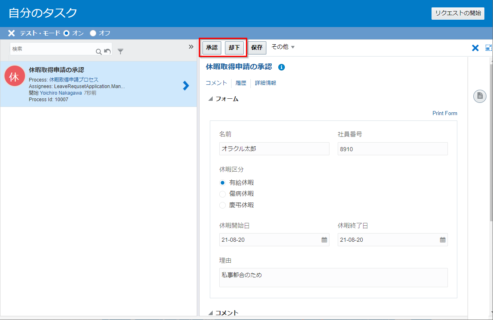
テスト環境のアプリケーションを非アクティブ化します。
プロセス・アプリケーションを本番環境にアクティブ化する
作成したアプリケーションを、本番環境にアクティブ化（公開）します。
「公開」をクリックします。

任意のコメント（ここでは年月日_時分）を入力し、「公開」をクリックします。

「アクティブ化」をクリックし、「新規バージョンのアクティブ化」をクリックします。

スナップショットの選択で、最終公開バージョンを選択し、 「Validate」 をクリックします。

「オプション」をクリックします。

バージョンを入力します。ここでは 1.0 を入力します。
すべての選択にチェックを入れ、「アクティブ化」をクリックします。

アクティブ化が完了することを確認し、「終了」をクリックします。
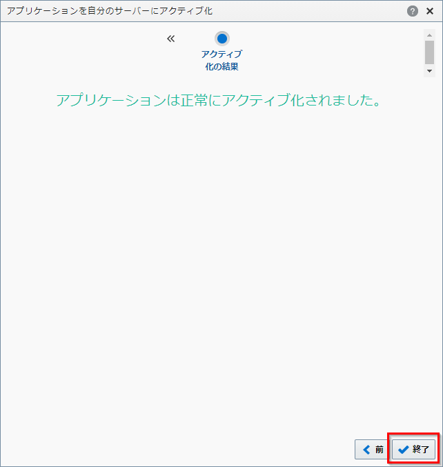
本番環境のプロセス・アプリケーションを利用するユーザーを設定する
本番環境にアクティブ化されたプロセス・アプリケーションを利用するユーザー（もしくはグループ）を設定します。
OIC ホームに戻り自分のタスクをクリックします。

「管理」をクリックします。

ロールの検索に、「LeaveRequestApplication」を入力し、検索を実行します。
「LeaveRequestApplication.Employee」 を選択し、メンバーの追加をクリックします。
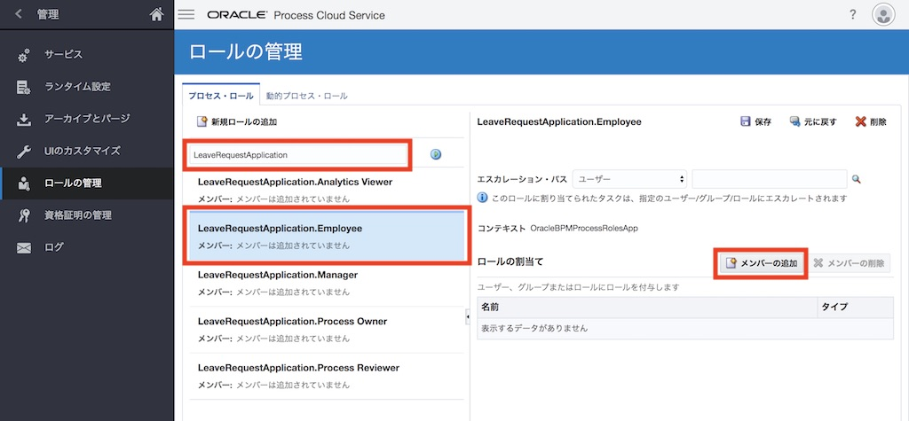
追加するユーザーもしくはグループを検索します。
ここでは、自分のユーザーIDを選択し、「OK」をクリックします。

「保存」をクリックします。

同じ手順を繰り返し、LeaveRequestApplication.Manager にユーザー（ここでは自分のユーザーID）を追加します。

確認：休暇承認プロセスを実行する
プロセス・アプリケーションを実行し、休暇取得申請を提出し、承認します。
OIC ホームに戻り、「自分のタスク」をクリックします。
自分のアプリをクリックします。

休暇取得申請の新規追加の LR アイコンをクリックします。

テスト・モードと同じ操作で、休暇取得申請の新規作成および承認操作を実施します。
完了済プロセスの確認するには、「プロセス」をクリックし、フィルタメニューからステータスの完了を選択します。
「完了済プロセス」をクリックし、詳細情報を確認します。

詳細な監査証跡を表示するには「履歴」セクションからツリー・ビューを選択します。
プロセスのすべてのアクティビティから送信されたデータを確認できます。
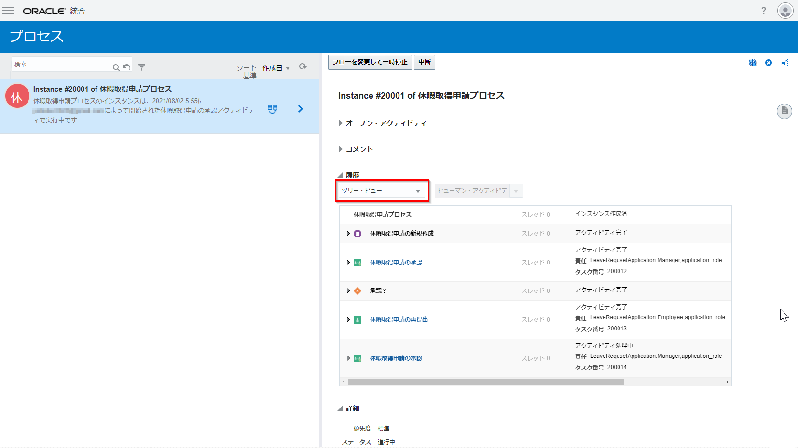
以上でこのチュートリアルは終了です。